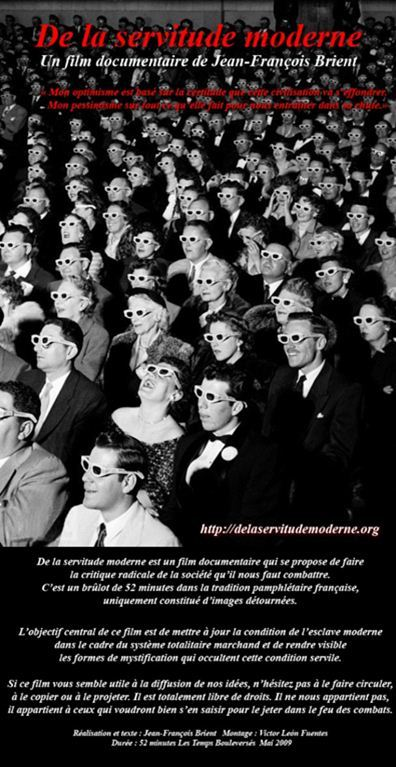
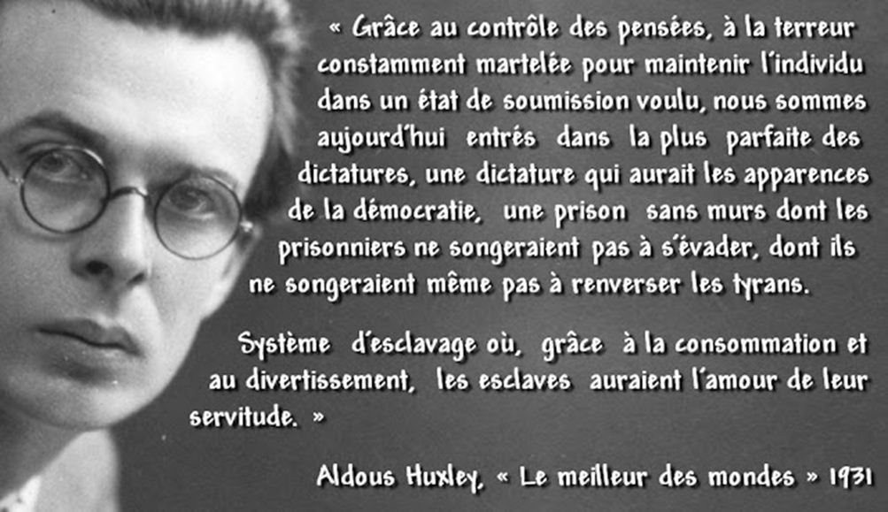
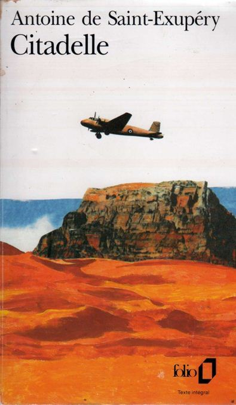
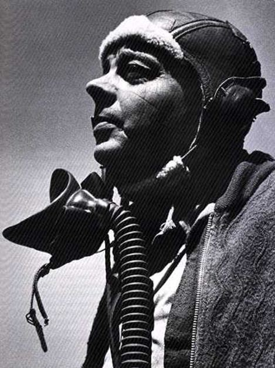

« Les tyrans ne sont grands que parce que nous sommes à genoux »
Etienne de la Boétie, 1549
Etienne de la Boétie, ce « Rimbaud de la philosophie » (1530-1563) a écrit vers l'âge de 16 ans un court essai intitulé « Discours de la servitude volontaire » et qui décrit au-delà des mécanismes de la tyrannie quelles en sont les éléments et le mécanisme constitutifs à l'apparition de la dictature.
Il ressort de cet ouvrage essentiel à une compréhension du monde moderne que non seulement il n'y a pas de tyrannie sans esclaves mais que ce sont ces derniers qui produisent les tyrans.
D'autres auteurs contemporains vont prolonger cette analyse et notamment Aldous Huxley (« Le meilleur des mondes »), Georges Orwell (« 1948 »), Guy Debord (« La société du spectacle ») Hannah Arendt etc... et dénoncent à leur tour cette faiblesse que La Boétie décrivait comme un « vice » incompréhensible de l'Homme abandonnant volontairement sa liberté à une tyrannie.
En 2007, Jean-François Brient écrit un livre « De la servitude moderne » qui prolonge la réflexion de Etienne de la Boétie dans notre monde moderne ou la marchandisation a remplacé la tyran et le consommateur l'esclave...
Ce travail sera adapté au cinéma 2 ans plus tard par Victor León Fuentes, sous la forme d'un documentaire de 52', un film essentiel à diffuser le plus possible !
« les hommes ne sont pas esclaves parce qu’il existe des maîtres, mais il existe des maîtres parce qu’ils ont choisi de demeurer esclave ».
Les différentes déclinaisons descriptives de notre monde moderne présentées dans ce documentaire sont des prolongements de la réflexion du jeune philosophe du XVIème dont la vision est restée étonnamment actuelle malgré la mutation de la tyrannie car, alors que la servitude contraignante de l'esclavage a disparu, la servitude volontaire a survécu et s'est même généralisée dans le système démocratique qui semble être le cadre idéal à l'épanouissement des nouvelles dictatures...
L'universalisme d'une pensée et l'individualisme d’une liberté surveillée ont donné aux hommes l'illusion de jouir d'un libre arbitre. On le voit sur les réseaux sociaux où trop d'information tue l'information et surtout l'action, et les consciences, comme des papillons, attirées par la lumière restent engluées et perdues dans les labyrinthes d'une réinformation perpétuelle chronophage d'où elles ne peuvent plus s'extraire.
Or la Liberté est une valeur identitaire qui n'existe que lorsqu'elle est éprouvée en conscience amis aussi dans la chair et la masse qui par nature n'a pas de libre arbitre, mais juste des besoins atomisés au niveau de pulsions individuelles et qui ne pourront jamais générer des dynamiques politiques collectives.
Voilà pourquoi, parallèlement à un abrutissement consumériste égocentrique, le système s'est attaché à vouloir détruire depuis l'apparition de la pensée unique, qu'elle soit d'expression théologique ou politique, tous les corps sociaux intermédiaires susceptibles d'opposer des identités sacrées, à la dictature de « l'idéologie du même » et sa marchandisation du monde !
La grande ruse de nos démocraties parlementaires est d'avoir maintenu l'illusion d'une personnification et d'une spatialisation du pouvoir alors qu'en réalité, des élus locaux au Président de la République en passant par les parlementaires nous n'avons que des marionnettes qui veulent nous donner l'illusion d'un débat d'idées pour attirer notre attention et nos passions collectives loin de la réalité d'une ploutocratie sans frontière amorale.
Mais le plus grave est certainement ce dessèchement du cœur des hommes consécutif à l'abêtissement de l'Homme asservi car il est également devenu lâche, comme le constate La Boétie : « Or est-il donc certain qu’avec la liberté, se perd tout en un coup la vaillance ».
Or, cette « vaillance » est vitale car sans elle l'Homme ne peut plus protéger ou conquérir le degré de sa Liberté. Cette liberté, individuelle mais aussi sociale et ne fait pas partie d'une nature innée comme l'instinct de survie par exemple mais bien d'un héritage historique légué par des identités collectives qu'elles soient de dimension familiale, régionale ou nationale.
Dans l'Histoire des hommes, les libertés physiques ou intellectuelles ont souvent été attaquées par la tyrannie, mais jamais cette dernière n'a pu faire disparaître leur désir du cœur de l'Homme éprouvé, Au contraire jamais l'amour porté la Liberté n'a été aussi grande que sous la botte des tyrans.
Mais si cette liberté reste une braise ardente dans le cœur de l'Homme, c'est uniquement parce qu'elle est entretenue par le souffle de sa vaillance...
Du temps de l'esclavage ces combats pour la Liberté appelés « marronnages » étaient plus le fait des « nègres de canne » que des « nègres de maison » pourtant moins bien surveillés que leurs frères des plantations, mais un meilleur confort, des soins et de la nourriture avaient étouffé la braise dans beaucoup de cœurs pour qui l'esclavage était devenu une fatalité.
Il nous appartient donc en attendant que sonne l'heure de la reconquête, d'entretenir notre héritage européen et cette vaillance au secret de nos âmes, car sans eux la Liberté vraie ne serait plus qu'une promesse vaine d'un nouveau paradis artificiel.
Saint Exupéry, dans « Citadelle », son ultime ouvrage (posthume) rappelle lui aussi avec force cette faiblesse de la Nature humaine écrasé par elle-même lorsqu'elle n'est plus que bétail :
« Seul compte pour l'Homme le sens des choses »
(Chapitre XI)
« Je me souviens de ce qu'il advint d'eux, quand mon père parqua les trois mille réfugiés berbères dans un camp au Nord de la ville (...) Comme il était bon il les nourrit et les alimenta en étoffes, en sucre et en thé. Mais sans exiger leur travail contre les dons de sa magnificence. Ainsi n'eurent-ils plus à s'inquiéter pour leur subsistance (...)
Mais qui eut pu les croire heureux ? Nous allions parfois les visiter quand mon père désirait m'enseigner.
« Vois, disais-t-il, ils deviennent bétail et commencent tout doucement de pourrir... non dans leur chair mais dans leur cœur. »
Car tout pour eux perdait sa signification (...)
Et voilà que nos protégés n'avaient plus rien à se dire. Ayant usés leurs histoires de famille qui se ressemblaient toutes ? Ayant achevé de se décrire l'un à l'autre, leur tente, quand toutes leurs tentes étaient semblables. Ils usaient encore du langage pour des effets rudimentaires : « Prête moi ton réchaud » (...)
Humanité couchée sur sa litière, sous sa mangeoire, qu'eût-elle désiré ? Au nom de quoi se fut-elle battue ? Pour le pain, ils en recevaient. Pour la liberté ? Mais dans les limites de leur univers, ils étaient infiniment libres. (...)
Cependant la discorde s'installa chez eux comme une maladie. Une discorde incohérente qui ne les partageaient point en deux camps mais les dressait tous les uns contre chacun (...) Ils se surveillaient les uns les autres comme des chiens qui tournent autour de l'auge, et voici qu'au nom de leur justice ils commirent des meurtres, car leur justice était d'abord égalité. Et quiconque se distinguait en quoi que ce fut était écrasé par le nombre.
La masse, me dit mon père hait l'image de l'homme, car la masse est incohérente pousse dans tous les sens a la fois et annule l'esprit créateur. Il est certes mauvais quand l'homme écrase le troupeau, mais ne cherche point-là le grand esclavage : il se montre quand le troupeau écrase l'homme. (...)
Si tu veux qu'ils soient frères, oblige-les de bâtir une tour. Mais si tu veux qu'ils se haïssent, jette-leur du grain.
Et nous constatâmes peu à peu qu'ils perdaient l'usage des mots qui ne leur servaient plus. (...) Ils ne formaient plus que ces grognements vagues qui réclament la nourriture. Ils végétaient sans regrets, ni désirs ni haine ni amour.(...)
(Chapitre XII)
« Car voilà bien, disait mon père, un grand mystère de l'Homme. Ils perdent l'essentiel et ignorent ce qu'ils ont perdu. Ainsi l'ignorent de même les sédentaires des oasis accroupis sur leurs provisions. (...) Tout s'est terni. Tout s'est durci. Et l'Homme qui ignore le désastre ne pleure pas sa plénitude passée. Il est satisfait par sa liberté qui est liberté de n'exister plus.(...)
C'est pourquoi il convient en permanence de tenir réveillé en l'homme ce qui est grand et de la convertir a sa propre grandeur. car l'aliment essentiel ne lui vient pas des choses mais du nœud qui noue les choses. (...)
Et mon père envoya un chanteur à cette humanité pourrissante. Le chanteur s'assit vers le soir sur la place et il commença de chanter. Il chanta les choses qui retentissent les unes sur les autres. Il chanta la princesse merveilleuse qu'on ne peut atteindre qu'à travers deux cent jours de marche dans le sable sans puits sous le soleil.
Et l'absence de puits devient sacrifice et ivresse d'amour. Et l'eau des outres devient prière car elle mène à la bien aimée.(...) Et ils eurent soif de la soif et tendant leurs poings dans la direction de mon père : « Scélérat ! Tu nous as privés de la soif qui est ivresse du sacrifice pour l'amour ! »
Il chanta cette menace qui règne lorsque la guerre est déclarée et que le sable se change en nid à vipères. Chaque dune s'augmente d'un pouvoir qui est de vie et de mort. Et ils eurent soif du risque de mort qui anime le sable.
Il chanta le prestige de l'ennemi quand on l'attend de toutes parts et qu'il roule d'un bord à l'autre de l'horizon, comme soleil dont on ne saurait d'où il va surgir ! Et ils eurent soif d'un ennemi qui les eut entouré de sa magnificence comme la mer.
Et quand ils eurent soif de l'amour entrevu comme un visage, les poignards jaillirent des gaines (...) Et ce fut le signal de la rébellion, laquelle fut belle comme un incendie !
Et tous ils moururent en Hommes ! (...)
(Chapitre XIII)
Car on ne meurt point pour des moutons, ni pour des chèvres ni pour des demeures ni pour des montagnes. car les objets subsistent sans que rien ne leur soit sacrifié. mais on meurt pour sauver l'invisible nœud qui les noue et les change en domaine, en empire, en visage reconnaissable et familier. »